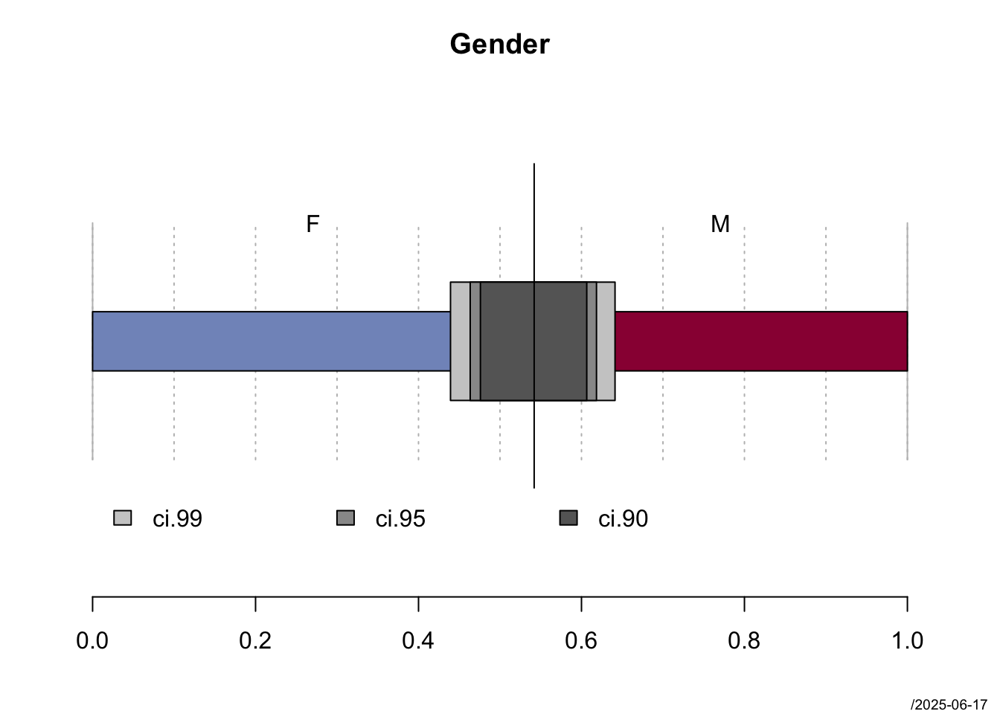
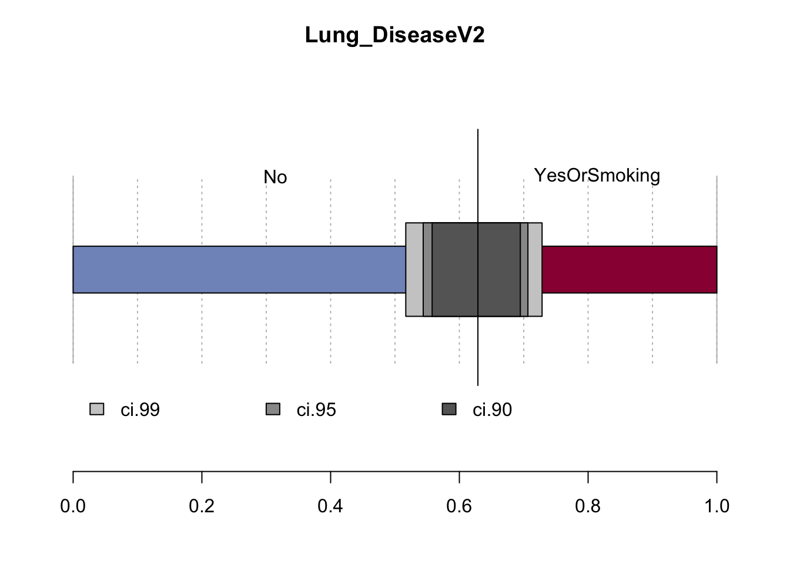
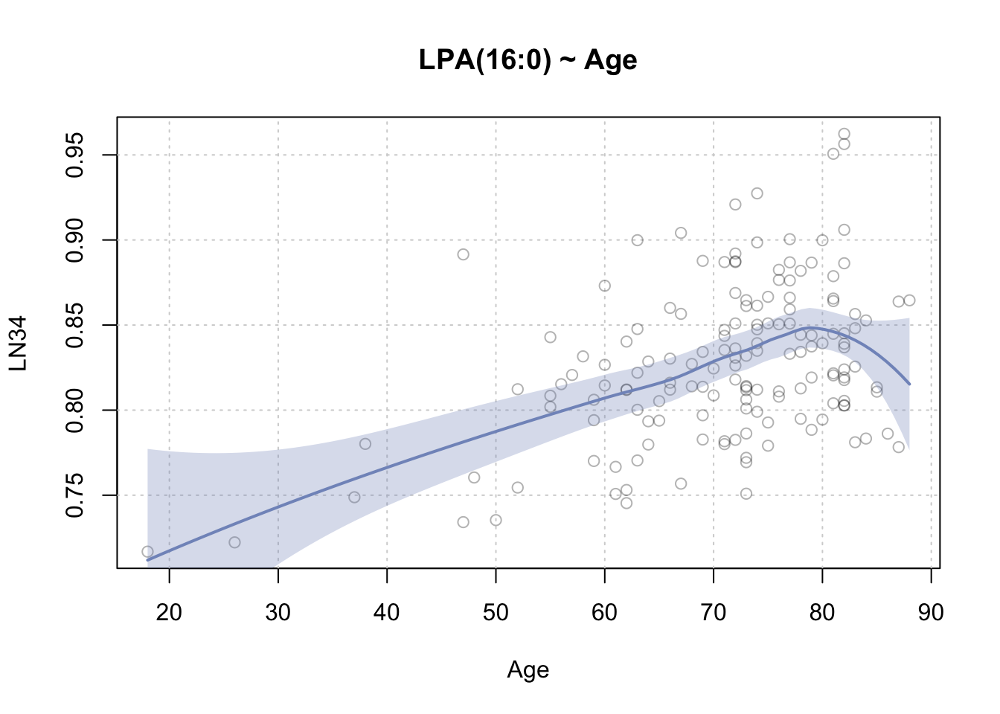
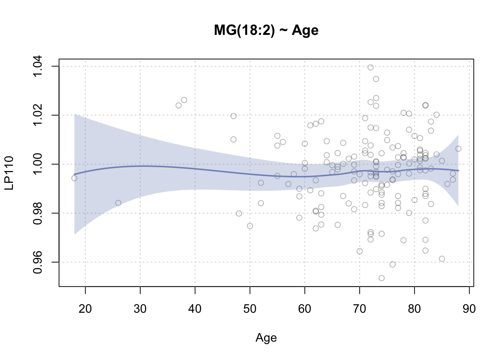
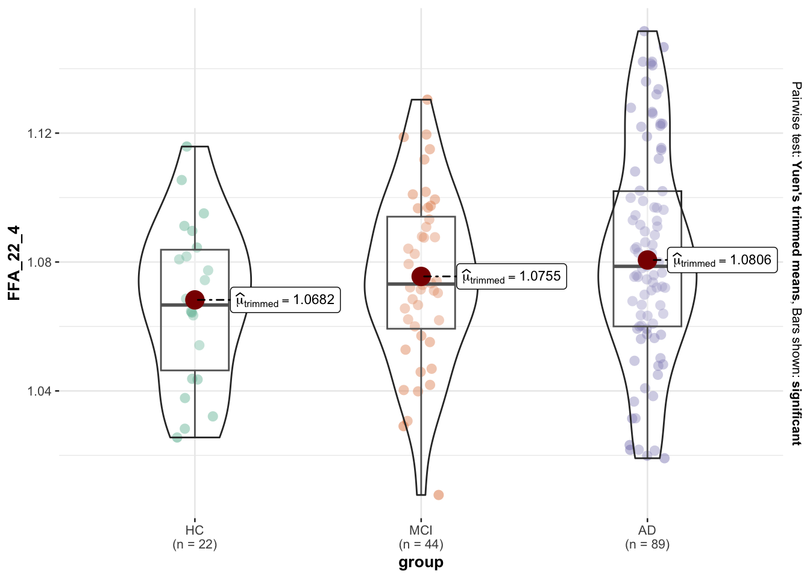
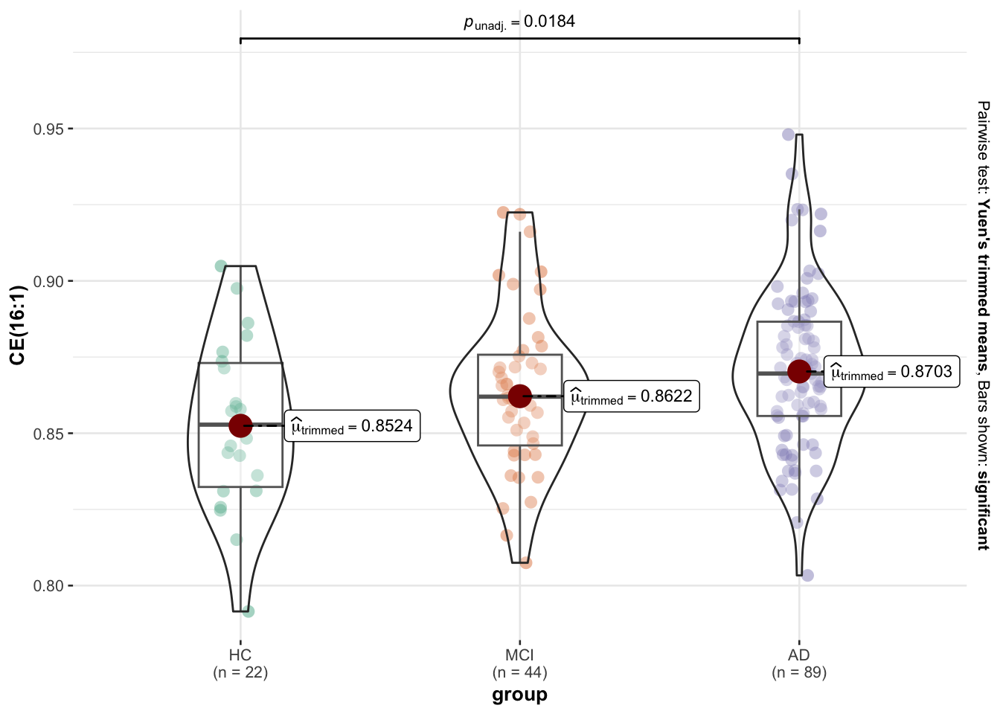
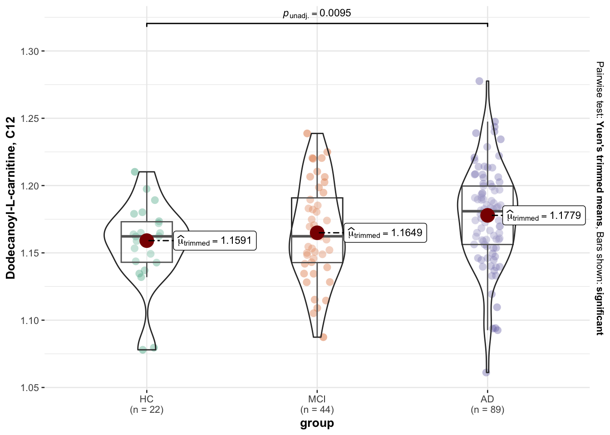

Data Description/Processing - AD Meta Data & Lipids
There are 3 ids present in the lipid data but not in the meta data: Their ids are “3797b”, “Missing” and “missing”.
The final data set that will be used for modeling and exploratory data analysis is shown below, together with its statistical descriptions.
Notes & Quick Descriptives
About 1/4 of the observations have a missing BMI.
Median Age is 73 years old.
Gender is balanced with 54% females.
Groups are unbalanced : AD ~ 57%, MCI ~ 28% and HC ~ 14%
There are missing values in all of the medication and disease type variables. About 15% on average are missing across these variables except for the Other variable which has too many missing values i.e. ~ 71%
With exception of the Diabetes variable which has 5 distinct values, the other variables have too many distinct values to be considered in a model esp. with a sample size of 155. To include those variables in an analysis they would have to be aggregated with a specific hypothesis question in mind, so then a more focused analysis can be executed and with more honest results.
metaDat2 Descriptives |
||||||||||
|---|---|---|---|---|---|---|---|---|---|---|
| 3 Continous Variables of 20 Variables, 155 Observations | ||||||||||
| Variable | Label | n | Missing | Distinct | Info | Mean | pMedian | Gini |Δ| | Quantiles .05 .10 .25 .50 .75 .90 .95 |
|
| Age | 155 | 0 | 42 | 0.998 | 70.96 | 72.5 | 11.75 | 51.4 58.4 65.5 73.0 79.0 82.0 83.3 | ||
| BMI | 116 | 39 | 88 | 1.000 | 26.87 | 26.64 | 4.491 | 21.40 22.35 24.15 26.62 29.14 32.66 34.68 | ||
| MMSE | 145 | 10 | 25 | 0.994 | 22.76 | 23.5 | 6.907 | 12 14 19 24 28 29 30 | ||
metaDat2 Descriptives |
|||||
|---|---|---|---|---|---|
| 17 Categorical Variables of 20 Variables, 155 Observations | |||||
| Variable | Label | n | Missing | Distinct | |
| id | 155 | 0 | 155 | 10029 - |
|
| group | 155 | 0 | 3 | ||
| groupV2 | 155 | 0 | 3 | ||
| Gender | 155 | 0 | 2 | ||
| Medication | 124 | 31 | 123 | Amlopen |Tenormin |Alphazol - |
|
| Diabetes | 129 | 26 | 5 | ||
| Strokes | 125 | 30 | 15 | ||
| Heart_Disease | 136 | 19 | 31 | ||
| Heart_Disease_V2 | 131 | 24 | 5 | ||
| Lung_Disease | 132 | 23 | 28 | ||
| Mental_Disorder | 141 | 14 | 24 | ||
| History_of_Head_Injuries_trauma | 127 | 28 | 13 | ||
| Other | 45 | 110 | 29 | ||
| DiabetesV2 | 129 | 26 | 2 | ||
| Heart_DiseaseV2 | 136 | 19 | 2 | ||
| Lung_DiseaseV2 | 132 | 23 | 2 | ||
| Mental_DisorderV2 | 141 | 14 | 2 | ||
Multiple Imputation
The missing values as seen in the data summaries above have been multiply imputed using the random forest algorithm. All below data descriptions, statistical tests and graphics are based on the imputed data. The Modeling & Assessing Lipid Added Value page also utilizes the data after imputation.
Data Descriptions & EDA
------------------------------------------------------------------------------
Groups
length n NAs unique levels dupes
155 155 0 3 3 y
100.0% 0.0%
level freq perc cumfreq cumperc
1 HC 22 14.2% 22 14.2%
2 MCI 44 28.4% 66 42.6%
3 AD 89 57.4% 155 100.0%------------------------------------------------------------------------------
Gender
length n NAs unique
155 155 0 2
100.0% 0.0%
freq perc lci.95 uci.95'
F 84 54.2% 46.3% 61.8%
M 71 45.8% 38.2% 53.7%
' 95%-CI (Wilson)
------------------------------------------------------------------------------
Age
length n NAs unique 0s mean meanCI'
155 155 0 42 0 70.96 69.18
100.0% 0.0% 0.0% 72.75
.05 .10 .25 median .75 .90 .95
51.40 58.40 65.50 73.00 79.00 82.00 83.30
range sd vcoef mad IQR skew kurt
70.00 11.25 0.16 10.38 13.50 -1.58 3.91
lowest : 18, 26, 37, 38, 47 (2)
highest: 84 (2), 85 (2), 86, 87 (2), 88
heap(?): remarkable frequency (8.4%) for the mode(s) (= 82)
' 95%-CI (classic)------------------------------------------------------------------------------
BMI
length n NAs unique 0s mean meanCI'
155 116 39 88 0 26.8709 26.1249
74.8% 25.2% 0.0% 27.6170
.05 .10 .25 median .75 .90 .95
21.4050 22.3550 24.1500 26.6150 29.1400 32.6550 34.6825
range sd vcoef mad IQR skew kurt
21.2000 4.0564 0.1510 3.6991 4.9900 0.5246 0.4595
lowest : 17.09, 18.07, 19.24, 20.24, 20.28
highest: 35.84, 36.51, 37.2, 38.06, 38.29
' 95%-CI (classic)------------------------------------------------------------------------------
Heart_Disease_V2
length n NAs unique levels dupes
155 131 24 5 5 y
84.5% 15.5%
level freq perc cumfreq cumperc
1 No 59 45.0% 59 45.0%
2 Lipid_Disorders 43 32.8% 102 77.9%
3 MACE 15 11.5% 117 89.3%
4 Hypertension_Related 7 5.3% 124 94.7%
5 Other 7 5.3% 131 100.0%------------------------------------------------------------------------------
DiabetesV2
length n NAs unique
155 129 26 2
83.2% 16.8%
freq perc lci.95 uci.95'
No 91 70.5% 62.2% 77.7%
Yes 38 29.5% 22.3% 37.8%
' 95%-CI (Wilson)------------------------------------------------------------------------------
Lung_DiseaseV2
length n NAs unique
155 132 23 2
85.2% 14.8%
freq perc lci.95 uci.95'
No 83 62.9% 54.4% 70.6%
YesOrSmoking 49 37.1% 29.4% 45.6%
' 95%-CI (Wilson)
------------------------------------------------------------------------------
Mental_DisorderV2
length n NAs unique
155 141 14 2
91.0% 9.0%
freq perc lci.95 uci.95'
DepAnx 84 59.6% 51.3% 67.3%
No 57 40.4% 32.7% 48.7%
' 95%-CI (Wilson)------------------------------------------------------------------------------
MMSE
length n NAs unique 0s mean meanCI'
155 145 10 25 0 22.76 21.72
93.5% 6.5% 0.0% 23.80
.05 .10 .25 median .75 .90 .95
12.00 14.00 19.00 24.00 28.00 29.00 30.00
range sd vcoef mad IQR skew kurt
28.00 6.34 0.28 5.93 9.00 -1.03 0.59
lowest : 2, 3, 5 (2), 8, 9
highest: 26 (9), 27 (8), 28 (13), 29 (19), 30 (11)
heap(?): remarkable frequency (13.1%) for the mode(s) (= 29)
' 95%-CI (classic)------------------------------------------------------------------------------
groupV2 ~ Age (metaDat2)
Summary:
n pairs: 155, valid: 155 (100.0%), missings: 0 (0.0%), groups: 3
HC MCI AD
mean 56.2 68.8 75.7
median 62.0 69.0 76.0
sd 15.5 8.8 6.8
IQR 16.8 13.2 9.0
n 22 44 89
np 14.2% 28.4% 57.4%
NAs 0 0 0
0s 0 0 0
Kruskal-Wallis rank sum test:
Kruskal-Wallis chi-squared = 46.329, df = 2, p-value = 8.704e-11
Proportions of groupV2 in the quantiles of Age:
Q1 Q2 Q3 Q4
HC 43.6% 6.7% 5.7% 0.0%
MCI 43.6% 31.1% 20.0% 16.7%
AD 12.8% 62.2% 74.3% 83.3%------------------------------------------------------------------------------
groupV2 ~ BMI (metaDat2)
Summary:
n pairs: 155, valid: 116 (74.8%), missings: 39 (25.2%), groups: 3
HC MCI AD
mean 25.9 27.5 26.8
median 25.3 27.1 26.8
sd 4.4 4.0 4.0
IQR 5.0 4.2 4.9
n 17 33 66
np 14.7% 28.4% 56.9%
NAs 5 11 23
0s 0 0 0
Kruskal-Wallis rank sum test:
Kruskal-Wallis chi-squared = 1.4472, df = 2, p-value = 0.485
Proportions of groupV2 in the quantiles of BMI:
Q1 Q2 Q3 Q4
HC 22.6% 11.1% 9.1% 16.0%
MCI 22.6% 33.3% 27.3% 32.0%
AD 54.8% 55.6% 63.6% 52.0%------------------------------------------------------------------------------
groupV2 ~ MMSE (metaDat2)
Summary:
n pairs: 155, valid: 145 (93.5%), missings: 10 (6.5%), groups: 3
HC MCI AD
mean 28.9 26.4 19.2
median 29.0 27.0 20.0
sd 0.9 3.0 6.1
IQR 0.0 3.8 9.0
n 22 42 81
np 15.2% 29.0% 55.9%
NAs 0 2 8
0s 0 0 0
Kruskal-Wallis rank sum test:
Kruskal-Wallis chi-squared = 78.168, df = 2, p-value < 2.2e-16
Proportions of groupV2 in the quantiles of MMSE:
Q1 Q2 Q3 Q4
HC 0.0% 0.0% 11.9% 56.7%
MCI 2.7% 22.2% 52.4% 36.7%
AD 97.3% 77.8% 35.7% 6.7%------------------------------------------------------------------------------
groupV2 ~ Heart_Disease_V2 (metaDat2)
Summary:
n: 131, rows: 3, columns: 5
Pearson's Chi-squared test:
X-squared = 4.2827, df = 8, p-value = 0.8308
Log likelihood ratio (G-test) test of independence:
G = 4.5016, X-squared df = 8, p-value = 0.8093
Mantel-Haenszel Chi-squared:
X-squared = 0.061645, df = 1, p-value = 0.8039
[31m
Warning message:
Exp. counts < 5: Chi-squared approx. may be incorrect!!
[39m
Contingency Coeff. 0.178
Cramer's V 0.128
Kendall Tau-b -0.034
Heart_Disease_V2 Hypertension_Related Lipid_Disorders MACE
groupV2
HC freq 1 7 2
perc 0.8% 5.3% 1.5%
p.row 5.6% 38.9% 11.1%
p.col 14.3% 16.3% 13.3%
MCI freq 1 14 3
perc 0.8% 10.7% 2.3%
p.row 2.3% 31.8% 6.8%
p.col 14.3% 32.6% 20.0%
AD freq 5 22 10
perc 3.8% 16.8% 7.6%
p.row 7.2% 31.9% 14.5%
p.col 71.4% 51.2% 66.7%
Sum freq 7 43 15
perc 5.3% 32.8% 11.5%
p.row . . .
p.col . . .
Heart_Disease_V2 No Other Sum
groupV2
HC freq 7 1 18
perc 5.3% 0.8% 13.7%
p.row 38.9% 5.6% .
p.col 11.9% 14.3% .
MCI freq 24 2 44
perc 18.3% 1.5% 33.6%
p.row 54.5% 4.5% .
p.col 40.7% 28.6% .
AD freq 28 4 69
perc 21.4% 3.1% 52.7%
p.row 40.6% 5.8% .
p.col 47.5% 57.1% .
Sum freq 59 7 131
perc 45.0% 5.3% 100.0%
p.row . . .
p.col . . .
------------------------------------------------------------------------------
groupV2 ~ DiabetesV2 (metaDat2)
Summary:
n: 129, rows: 3, columns: 2
Pearson's Chi-squared test:
X-squared = 1.866, df = 2, p-value = 0.3934
Log likelihood ratio (G-test) test of independence:
G = 1.9701, X-squared df = 2, p-value = 0.3734
Mantel-Haenszel Chi-squared:
X-squared = 1.8241, df = 1, p-value = 0.1768
Contingency Coeff. 0.119
Cramer's V 0.120
Kendall Tau-b 0.111
DiabetesV2 No Yes Sum
groupV2
HC freq 14 3 17
perc 10.9% 2.3% 13.2%
p.row 82.4% 17.6% .
p.col 15.4% 7.9% .
MCI freq 32 12 44
perc 24.8% 9.3% 34.1%
p.row 72.7% 27.3% .
p.col 35.2% 31.6% .
AD freq 45 23 68
perc 34.9% 17.8% 52.7%
p.row 66.2% 33.8% .
p.col 49.5% 60.5% .
Sum freq 91 38 129
perc 70.5% 29.5% 100.0%
p.row . . .
p.col . . .
------------------------------------------------------------------------------
groupV2 ~ Lung_DiseaseV2 (metaDat2)
Summary:
n: 132, rows: 3, columns: 2
Pearson's Chi-squared test:
X-squared = 1.641, df = 2, p-value = 0.4402
Log likelihood ratio (G-test) test of independence:
G = 1.7326, X-squared df = 2, p-value = 0.4205
Mantel-Haenszel Chi-squared:
X-squared = 0.56313, df = 1, p-value = 0.453
Contingency Coeff. 0.111
Cramer's V 0.111
Kendall Tau-b 0.047
Lung_DiseaseV2 No YesOrSmoking Sum
groupV2
HC freq 13 4 17
perc 9.8% 3.0% 12.9%
p.row 76.5% 23.5% .
p.col 15.7% 8.2% .
MCI freq 26 18 44
perc 19.7% 13.6% 33.3%
p.row 59.1% 40.9% .
p.col 31.3% 36.7% .
AD freq 44 27 71
perc 33.3% 20.5% 53.8%
p.row 62.0% 38.0% .
p.col 53.0% 55.1% .
Sum freq 83 49 132
perc 62.9% 37.1% 100.0%
p.row . . .
p.col . . .
------------------------------------------------------------------------------
groupV2 ~ Mental_DisorderV2 (metaDat2)
Summary:
n: 141, rows: 3, columns: 2
Pearson's Chi-squared test:
X-squared = 24.487, df = 2, p-value = 4.816e-06
Log likelihood ratio (G-test) test of independence:
G = 24.71, X-squared df = 2, p-value = 4.307e-06
Mantel-Haenszel Chi-squared:
X-squared = 9.223, df = 1, p-value = 0.00239
Contingency Coeff. 0.385
Cramer's V 0.417
Kendall Tau-b -0.305
Mental_DisorderV2 DepAnx No Sum
groupV2
HC freq 9 5 14
perc 6.4% 3.5% 9.9%
p.row 64.3% 35.7% .
p.col 10.7% 8.8% .
MCI freq 13 31 44
perc 9.2% 22.0% 31.2%
p.row 29.5% 70.5% .
p.col 15.5% 54.4% .
AD freq 62 21 83
perc 44.0% 14.9% 58.9%
p.row 74.7% 25.3% .
p.col 73.8% 36.8% .
Sum freq 84 57 141
perc 59.6% 40.4% 100.0%
p.row . . .
p.col . . .
------------------------------------------------------------------------------
LN3 ~ Age (d_imp2_WithLipids)
Summary:
n pairs: 155, valid: 155 (100.0%), missings: 0 (0.0%)
Pearson corr. : 0.390
Spearman corr.: 0.472
Kendall corr. : 0.342------------------------------------------------------------------------------
groupV2 ~ LN3 (d_imp2_WithLipids)
Summary:
n pairs: 155, valid: 155 (100.0%), missings: 0 (0.0%), groups: 3
HC MCI AD
mean 1.0 1.0 1.0
median 1.0 1.0 1.0
sd 0.0 0.0 0.0
IQR 0.0 0.0 0.0
n 22 44 89
np 14.2% 28.4% 57.4%
NAs 0 0 0
0s 0 0 0
Kruskal-Wallis rank sum test:
Kruskal-Wallis chi-squared = 61.635, df = 2, p-value = 4.131e-14
Proportions of groupV2 in the quantiles of LN3:
Q1 Q2 Q3 Q4
HC 23.1% 28.2% 5.3% 0.0%
MCI 53.8% 41.0% 18.4% 0.0%
AD 23.1% 30.8% 76.3% 100.0%------------------------------------------------------------------------------
groupV2 ~ Age (d_imp2_WithLipids)
Summary:
n pairs: 155, valid: 155 (100.0%), missings: 0 (0.0%), groups: 3
HC MCI AD
mean 56.2 68.8 75.7
median 62.0 69.0 76.0
sd 15.5 8.8 6.8
IQR 16.8 13.2 9.0
n 22 44 89
np 14.2% 28.4% 57.4%
NAs 0 0 0
0s 0 0 0
Kruskal-Wallis rank sum test:
Kruskal-Wallis chi-squared = 46.329, df = 2, p-value = 8.704e-11
Proportions of groupV2 in the quantiles of Age:
Q1 Q2 Q3 Q4
HC 43.6% 6.7% 5.7% 0.0%
MCI 43.6% 31.1% 20.0% 16.7%
AD 12.8% 62.2% 74.3% 83.3%------------------------------------------------------------------------------
groupV2 ~ Mental_DisorderV2 (d_imp2_WithLipids)
Summary:
n: 155, rows: 3, columns: 2
Pearson's Chi-squared test:
X-squared = 27.848, df = 2, p-value = 8.974e-07
Log likelihood ratio (G-test) test of independence:
G = 27.769, X-squared df = 2, p-value = 9.334e-07
Mantel-Haenszel Chi-squared:
X-squared = 6.7975, df = 1, p-value = 0.009129
Contingency Coeff. 0.390
Cramer's V 0.424
Kendall Tau-b 0.261
Mental_DisorderV2 No DepAnx Sum
groupV2
HC freq 7 15 22
perc 4.5% 9.7% 14.2%
p.row 31.8% 68.2% .
p.col 11.9% 15.6% .
MCI freq 31 13 44
perc 20.0% 8.4% 28.4%
p.row 70.5% 29.5% .
p.col 52.5% 13.5% .
AD freq 21 68 89
perc 13.5% 43.9% 57.4%
p.row 23.6% 76.4% .
p.col 35.6% 70.8% .
Sum freq 59 96 155
perc 38.1% 61.9% 100.0%
p.row . . .
p.col . . .
1 Age Vs Lipids
[[1]]
------------------------------------------------------------------------------
FFA_10_2 ~ Age >= 50
Summary:
n pairs: 148, valid: 148 (100.0%), missings: 0 (0.0%)
Pearson corr. : 0.432
Spearman corr.: 0.443
Kendall corr. : 0.322[[1]]
------------------------------------------------------------------------------
FFA_10_2 ~ Age
Summary:
n pairs: 155, valid: 155 (100.0%), missings: 0 (0.0%)
Pearson corr. : 0.390
Spearman corr.: 0.472
Kendall corr. : 0.342
[[2]]
------------------------------------------------------------------------------
FFA_12_0 ~ Age
Summary:
n pairs: 155, valid: 155 (100.0%), missings: 0 (0.0%)
Pearson corr. : -0.013
Spearman corr.: 0.046
Kendall corr. : 0.030
[[3]]
------------------------------------------------------------------------------
FFA_12_1 ~ Age
Summary:
n pairs: 155, valid: 155 (100.0%), missings: 0 (0.0%)
Pearson corr. : 0.143
Spearman corr.: 0.126
Kendall corr. : 0.088
[[4]]
------------------------------------------------------------------------------
FFA_14_0 ~ Age
Summary:
n pairs: 155, valid: 155 (100.0%), missings: 0 (0.0%)
Pearson corr. : 0.083
Spearman corr.: 0.113
Kendall corr. : 0.080
[[5]]
------------------------------------------------------------------------------
FFA_14_1 ~ Age
Summary:
n pairs: 155, valid: 155 (100.0%), missings: 0 (0.0%)
Pearson corr. : 0.154
Spearman corr.: 0.135
Kendall corr. : 0.094
[[6]]
------------------------------------------------------------------------------
FFA_16_0 ~ Age
Summary:
n pairs: 155, valid: 155 (100.0%), missings: 0 (0.0%)
Pearson corr. : 0.137
Spearman corr.: 0.169
Kendall corr. : 0.126
[[7]]
------------------------------------------------------------------------------
FFA_16_1 ~ Age
Summary:
n pairs: 155, valid: 155 (100.0%), missings: 0 (0.0%)
Pearson corr. : 0.180
Spearman corr.: 0.147
Kendall corr. : 0.097
[[8]]
------------------------------------------------------------------------------
FFA_18_0 ~ Age
Summary:
n pairs: 155, valid: 155 (100.0%), missings: 0 (0.0%)
Pearson corr. : 0.085
Spearman corr.: 0.093
Kendall corr. : 0.069
[[9]]
------------------------------------------------------------------------------
FFA_18_1 ~ Age
Summary:
n pairs: 155, valid: 155 (100.0%), missings: 0 (0.0%)
Pearson corr. : 0.243
Spearman corr.: 0.244
Kendall corr. : 0.173
[[10]]
------------------------------------------------------------------------------
FFA_20_0 ~ Age
Summary:
n pairs: 155, valid: 155 (100.0%), missings: 0 (0.0%)
Pearson corr. : -0.065
Spearman corr.: -0.042
Kendall corr. : -0.024
[[11]]
------------------------------------------------------------------------------
FFA_20_3 ~ Age
Summary:
n pairs: 155, valid: 155 (100.0%), missings: 0 (0.0%)
Pearson corr. : 0.051
Spearman corr.: 0.080
Kendall corr. : 0.057
[[12]]
------------------------------------------------------------------------------
FFA_22_4 ~ Age
Summary:
n pairs: 155, valid: 155 (100.0%), missings: 0 (0.0%)
Pearson corr. : 0.143
Spearman corr.: 0.137
Kendall corr. : 0.092
[[13]]
------------------------------------------------------------------------------
FFA_22_5 ~ Age
Summary:
n pairs: 155, valid: 155 (100.0%), missings: 0 (0.0%)
Pearson corr. : 0.129
Spearman corr.: 0.120
Kendall corr. : 0.084
[[14]]
------------------------------------------------------------------------------
LPA(16:0) ~ Age
Summary:
n pairs: 155, valid: 155 (100.0%), missings: 0 (0.0%)
Pearson corr. : 0.439
Spearman corr.: 0.331
Kendall corr. : 0.233
[[15]]
------------------------------------------------------------------------------
LPA(18:1) ~ Age
Summary:
n pairs: 155, valid: 155 (100.0%), missings: 0 (0.0%)
Pearson corr. : 0.417
Spearman corr.: 0.265
Kendall corr. : 0.188
[[16]]
------------------------------------------------------------------------------
PI(16:0/18:1) ~ Age
Summary:
n pairs: 155, valid: 155 (100.0%), missings: 0 (0.0%)
Pearson corr. : -0.005
Spearman corr.: 0.003
Kendall corr. : 0.006
[[17]]
------------------------------------------------------------------------------
PI(18:0/18:2) ~ Age
Summary:
n pairs: 155, valid: 155 (100.0%), missings: 0 (0.0%)
Pearson corr. : -0.001
Spearman corr.: -0.047
Kendall corr. : -0.031
[[18]]
------------------------------------------------------------------------------
PI(18:0/20:2) ~ Age
Summary:
n pairs: 155, valid: 155 (100.0%), missings: 0 (0.0%)
Pearson corr. : 0.040
Spearman corr.: 0.028
Kendall corr. : 0.017
[[19]]
------------------------------------------------------------------------------
PI(18:1/18:2) ~ Age
Summary:
n pairs: 155, valid: 155 (100.0%), missings: 0 (0.0%)
Pearson corr. : -0.092
Spearman corr.: -0.116
Kendall corr. : -0.079
[[20]]
------------------------------------------------------------------------------
CE(16:1) ~ Age
Summary:
n pairs: 155, valid: 155 (100.0%), missings: 0 (0.0%)
Pearson corr. : 0.041
Spearman corr.: 0.077
Kendall corr. : 0.053
[[21]]
------------------------------------------------------------------------------
Cer(d18:1/16:1) ~ Age
Summary:
n pairs: 155, valid: 155 (100.0%), missings: 0 (0.0%)
Pearson corr. : 0.100
Spearman corr.: 0.089
Kendall corr. : 0.060
[[22]]
------------------------------------------------------------------------------
Cer(d18:1/20:2) ~ Age
Summary:
n pairs: 155, valid: 155 (100.0%), missings: 0 (0.0%)
Pearson corr. : 0.346
Spearman corr.: 0.333
Kendall corr. : 0.230
[[23]]
------------------------------------------------------------------------------
Cer(d18:1/20:4) ~ Age
Summary:
n pairs: 155, valid: 155 (100.0%), missings: 0 (0.0%)
Pearson corr. : 0.276
Spearman corr.: 0.281
Kendall corr. : 0.198
[[24]]
------------------------------------------------------------------------------
Gb3(d18:1/18:0) ~ Age
Summary:
n pairs: 155, valid: 155 (100.0%), missings: 0 (0.0%)
Pearson corr. : 0.273
Spearman corr.: 0.283
Kendall corr. : 0.202
[[25]]
------------------------------------------------------------------------------
GlcCer(d18:1/14:0) ~ Age
Summary:
n pairs: 155, valid: 155 (100.0%), missings: 0 (0.0%)
Pearson corr. : -0.143
Spearman corr.: -0.188
Kendall corr. : -0.127
[[26]]
------------------------------------------------------------------------------
GlcCer(d18:1/22:2) ~ Age
Summary:
n pairs: 155, valid: 155 (100.0%), missings: 0 (0.0%)
Pearson corr. : 0.220
Spearman corr.: 0.289
Kendall corr. : 0.197
[[27]]
------------------------------------------------------------------------------
LPE(20:4) ~ Age
Summary:
n pairs: 155, valid: 155 (100.0%), missings: 0 (0.0%)
Pearson corr. : 0.003
Spearman corr.: 0.055
Kendall corr. : 0.039
[[28]]
------------------------------------------------------------------------------
LPS(12:0) ~ Age
Summary:
n pairs: 155, valid: 155 (100.0%), missings: 0 (0.0%)
Pearson corr. : 0.255
Spearman corr.: 0.276
Kendall corr. : 0.184
[[29]]
------------------------------------------------------------------------------
MG(18:2) ~ Age
Summary:
n pairs: 155, valid: 155 (100.0%), missings: 0 (0.0%)
Pearson corr. : 0.001
Spearman corr.: 0.068
Kendall corr. : 0.046
[[30]]
------------------------------------------------------------------------------
PC (O-16:0/18:1) ~ Age
Summary:
n pairs: 155, valid: 155 (100.0%), missings: 0 (0.0%)
Pearson corr. : 0.194
Spearman corr.: 0.202
Kendall corr. : 0.142
[[31]]
------------------------------------------------------------------------------
PC (O-18:0/16:1) ~ Age
Summary:
n pairs: 155, valid: 155 (100.0%), missings: 0 (0.0%)
Pearson corr. : 0.197
Spearman corr.: 0.204
Kendall corr. : 0.145
[[32]]
------------------------------------------------------------------------------
PC(O-18:1/16:0) ~ Age
Summary:
n pairs: 155, valid: 155 (100.0%), missings: 0 (0.0%)
Pearson corr. : 0.194
Spearman corr.: 0.203
Kendall corr. : 0.143
[[33]]
------------------------------------------------------------------------------
PC (P-16:0/18:0) ~ Age
Summary:
n pairs: 155, valid: 155 (100.0%), missings: 0 (0.0%)
Pearson corr. : 0.194
Spearman corr.: 0.202
Kendall corr. : 0.143
[[34]]
------------------------------------------------------------------------------
PC(P-18:0/16:0) ~ Age
Summary:
n pairs: 155, valid: 155 (100.0%), missings: 0 (0.0%)
Pearson corr. : 0.194
Spearman corr.: 0.203
Kendall corr. : 0.143
[[35]]
------------------------------------------------------------------------------
SM(d18:1/18:3) ~ Age
Summary:
n pairs: 155, valid: 155 (100.0%), missings: 0 (0.0%)
Pearson corr. : -0.157
Spearman corr.: -0.178
Kendall corr. : -0.127
[[36]]
------------------------------------------------------------------------------
SM(d18:1/22:1) ~ Age
Summary:
n pairs: 155, valid: 155 (100.0%), missings: 0 (0.0%)
Pearson corr. : -0.298
Spearman corr.: -0.316
Kendall corr. : -0.218
[[37]]
------------------------------------------------------------------------------
TG(16:0/16:0/16:0) ~ Age
Summary:
n pairs: 155, valid: 155 (100.0%), missings: 0 (0.0%)
Pearson corr. : 0.072
Spearman corr.: 0.163
Kendall corr. : 0.105
[[38]]
------------------------------------------------------------------------------
Carnitine, C0 ~ Age
Summary:
n pairs: 155, valid: 155 (100.0%), missings: 0 (0.0%)
Pearson corr. : 0.235
Spearman corr.: 0.237
Kendall corr. : 0.164
[[39]]
------------------------------------------------------------------------------
Hexanoyl-L-carnitine, C6 ~ Age
Summary:
n pairs: 155, valid: 155 (100.0%), missings: 0 (0.0%)
Pearson corr. : 0.280
Spearman corr.: 0.221
Kendall corr. : 0.157
[[40]]
------------------------------------------------------------------------------
Dodecanoyl-L-carnitine, C12 ~ Age
Summary:
n pairs: 155, valid: 155 (100.0%), missings: 0 (0.0%)
Pearson corr. : 0.211
Spearman corr.: 0.169
Kendall corr. : 0.119
[[41]]
------------------------------------------------------------------------------
Tetradecanoyl-L-carnitine, C14 ~ Age
Summary:
n pairs: 155, valid: 155 (100.0%), missings: 0 (0.0%)
Pearson corr. : 0.286
Spearman corr.: 0.264
Kendall corr. : 0.182
[[42]]
------------------------------------------------------------------------------
Hexadecanoyl-L-carnitine, C16 ~ Age
Summary:
n pairs: 155, valid: 155 (100.0%), missings: 0 (0.0%)
Pearson corr. : 0.232
Spearman corr.: 0.201
Kendall corr. : 0.140
[[43]]
------------------------------------------------------------------------------
Stearoyl-L-carnitine, C18 ~ Age
Summary:
n pairs: 155, valid: 155 (100.0%), missings: 0 (0.0%)
Pearson corr. : 0.112
Spearman corr.: 0.080
Kendall corr. : 0.053
[[44]]
------------------------------------------------------------------------------
Oleoyl-L-carnitine, C18-1 ~ Age
Summary:
n pairs: 155, valid: 155 (100.0%), missings: 0 (0.0%)
Pearson corr. : 0.313
Spearman corr.: 0.261
Kendall corr. : 0.181Correlation Tests
2 Disease Severity Groups Vs Selected Lipids
Note that p-values shown below are FDR adjusted at \(a = 0.2\) for all lipid group comparisons i.e. FDR_algc-adj, but not for any clinical data (see modeling page for this).
Data summary of significant lipids:
[[1]]
[[2]]
[[3]]
[[4]]
[[5]]
[[6]]
[[7]]
[[8]]
[[9]]
[[10]]
[[11]]
[[12]]
[[13]]
[[14]]
[[15]]
[[16]]
[[17]]
[[18]]
[[19]]
[[20]]
[[21]]
[[22]]
[[23]]
[[24]]
[[25]]
[[26]]
[[27]]
[[28]]
[[29]]
[[30]]
[[31]]
[[32]]
[[33]]
[[34]]
[[35]]
[[36]]
[[37]]
[[38]]
[[39]]
[[40]]
[[41]]
[[42]]
[[43]]
[[44]]